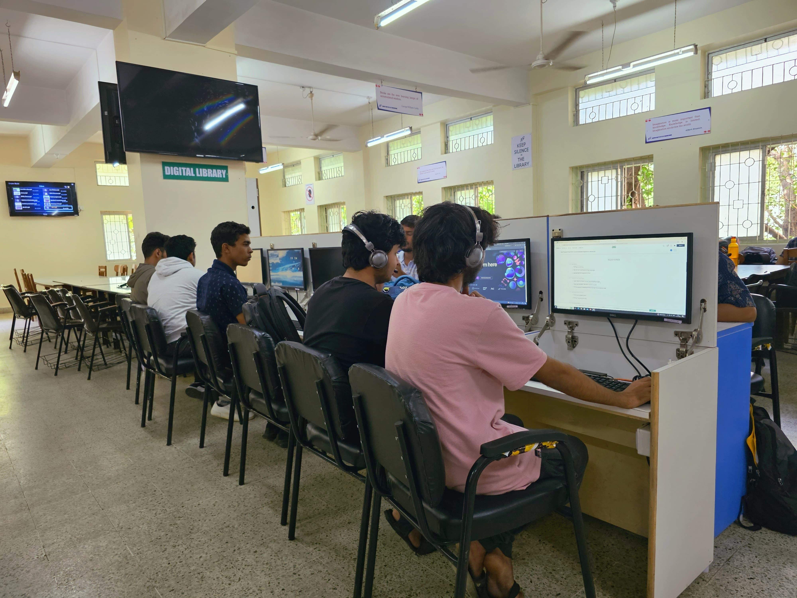
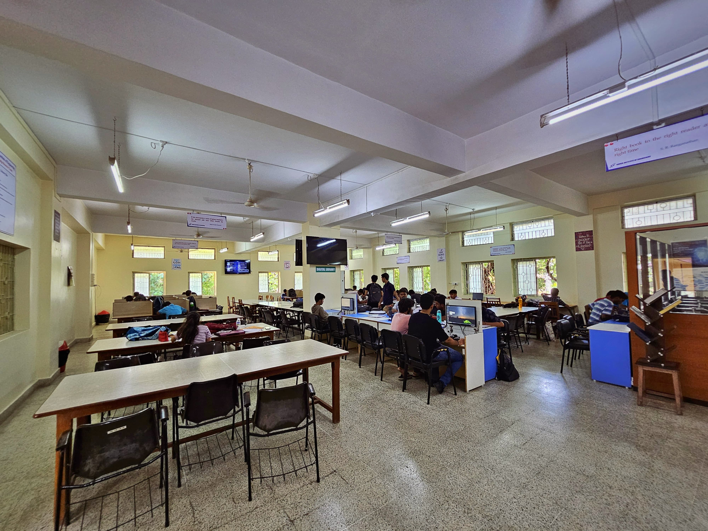
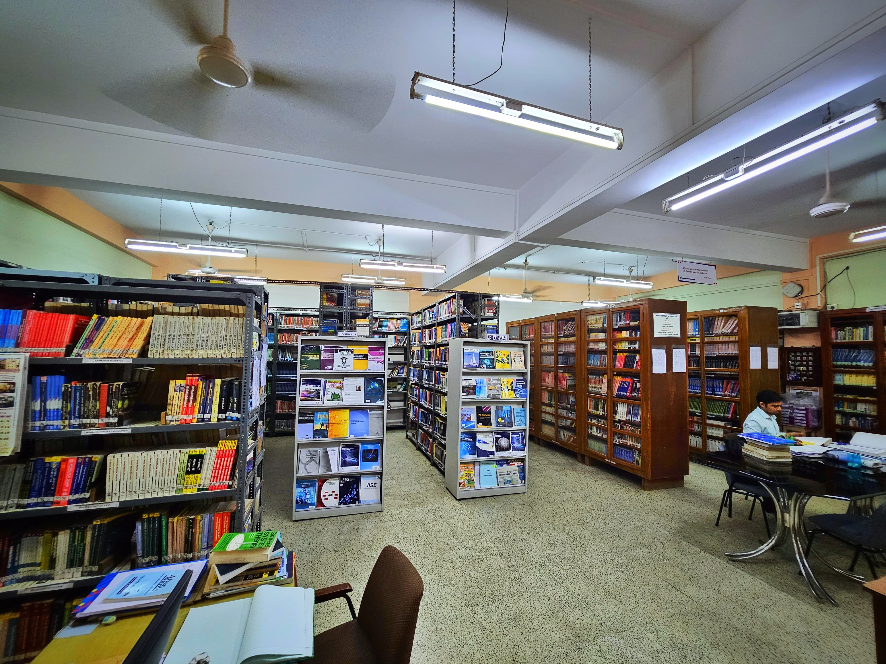

The XIE Library at Xavier Institute of Engineering (XIE) serves as a vital resource center for students and faculty, offering access to a rich collection of academic books, journals, and digital resources. Designed to support educational and research activities, the library provides a conducive environment for learning and development.It facilitates both traditional and digital modes of information access, with modern infrastructure aimed at fostering academic growth and innovation. The library's services are enhanced by advanced systems for managing student attendance and resource circulation, making it a hub for academic engagement.

XIE
Smart Library
Innovative
The Smart XIE Library is a cutting-edge facility at Xavier Institute of Engineering (XIE), integrating modern technology to enhance the traditional library experience. With automated systems for book lending, real-time inventory management, and digital access to academic resources, the library offers a seamless user experience. Features like barcode-based student attendance, RFID-enabled book tracking, and online catalogs make it highly efficient. The Smart XIE Library not only promotes easy access to knowledge but also encourages a tech-savvy learning environment, supporting students and faculty with innovative tools for research and education.

XIE
Study Space
Workspace
Studying at the XIE Library offers students a focused and resource-rich environment to enhance their learning experience. The library provides access to a vast collection of academic books, journals, and digital resources across various disciplines. Equipped with modern infrastructure, the XIE Library has quiet study areas, group discussion rooms, and computer stations to facilitate both individual and collaborative learning. Students can utilize the library's digital databases for research, while the comfortable and well-organized setup encourages efficient studying. With the integration of smart technologies, like barcode attendance and automated book management, the library ensures a seamless and productive environment for academic growth.

XIE
Study Material
BOOKS
The XIE Library offers a wide range of books, including core textbooks on engineering, reference guides, research journals, and digital resources. It supports various fields like Electronics, Computer Science, and Mechanical Engineering, providing both physical and digital access to materials. The library is regularly updated to ensure students have the latest academic resources.